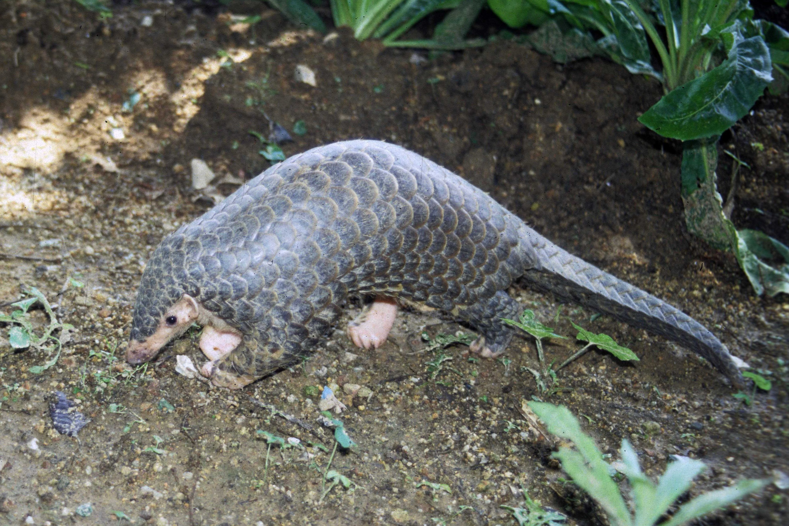
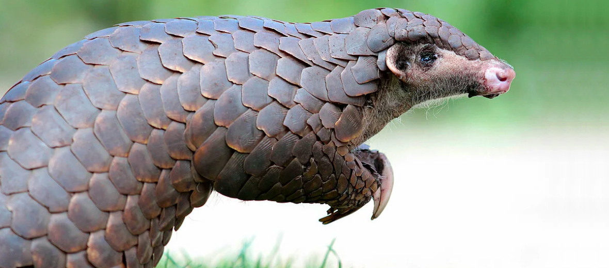
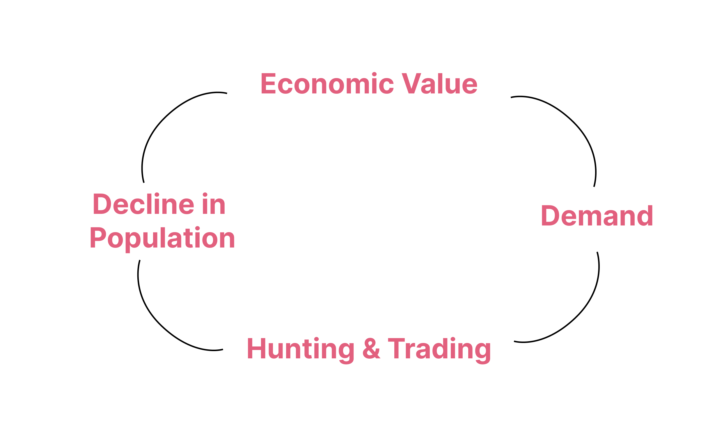
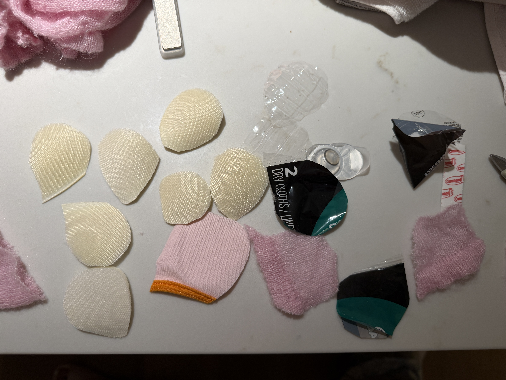

Week 03 — Ideation & Prototyping
Endangered Animal
01
About the Chinese Pangolin
Manis pentadactyla
The Chinese Pangolin has been assessed to be critically endangered by the International Union for Conservation of Nature, and its population is decreasing. This animal occurs across parts of east Asia, it lives in various environments, including tropical and subtropical forests, limestone, bamboo, broad-leaf and coniferous forests, grasslands and agricultural fields. Many of its burrows have been found in places like Guangdong, Jiangxi and Zhejiang found many burrows in broadleaf forest with relatively high canopy cover, suitable soil and access to water. Chinese pangolins are specialized insect predators, feeding primarily on ants and termites. Their big claws can dig into the soil to find the ants or build their homes. Chinese pangolins are also ecosystem engineers because their digging contributes to habitat heterogeneity and affects forest ecosystem overall.


Hunting and Illegal Trading
One of main reasons causing its decline in the past years is hunting and illegal trading. Chinese pangolins have historically been hunted for their scales and meat. The former for traditional medicine and other products; the latter for consumption/food. Humans are assigning a completely different meaning to the pangolin by making them different materials and products to be sold. Its scales become a commodity with economic value, and its meat becomes a product for consumption.

I think what is sarcastic is that the scales originally function as armor, protecting the pangolin, but humans have assigned commercial and medicinal value to those same scales, making it something that evolved to protect the animal has also become one of the reasons it is hunted. Its scales appears in both Chinese and Vietnamese traditional medicines to treat skin conditions, improve blood circulation and to stimulate milk secretion in lactating women. Even for cancer. Which is hilarious.
Habit Loss and Fragmentation
Land development, urban development, agriculture and other forms of land-cover change can eliminate or fragment suitable habitat. Major developments including hydropower stations and mining also pose a threat to the specie. More recent assessments also identify problems such as the building of roads and annual/perennial non-timber crops. It is interesting that Chinese pangolins can actually tolerate some or low human activities when hunting pressure is absent. This means that we, as humans, living with them is not a problem, what we do to them is actually causing their decline.

02
Materials


I used cloth and packing paper for bowls to make the body of the pangolin. The cloth are very old ones that I do not wear, I bought them long time before. Clothes are made of fabric and usually we can recycle it, but still we create the demand of production by consumerism. I think this is great example of consumerism that I bought them for aesthetic, or by advertisements, which I actually do not need that much. The packing paper is recyclable, and it is used to protect the bowls. I choose specifically this paper because I think its pattern looks like the scale of pangolin. This materials do not usually creates a lot waste and it is designed to be recycled since I got them from furniture stores. The pastic bags of products are not easy to recycle, and it need to be burnt which creates pollution.
This can link to the reason of decreasing pangolins as they have been hunted and illegally traded due to humans assigned economic value to their scales and meat. Their bodies are taken out of an ecological system and transformed into commodities that can be purchased and consumed. The wastes in my sculpture have gone through a similar cycle of value. they are once just material or biological matter, then people make them commodities and gives them much more buying value. Therefore creating need and trend for consumption, and then eventually they become wastes. By collecting these wastes and using it to reconstruct the body of a pangolin, I could revise and reflect on this process.
03
Making Process


01
I cut my clothes into pieces to mimic the scales on pangolin skin, and I glued them together. The different materials also represent different parts of consumer culture. Receipts from purchase record transactions and economic value; packaging paper and plastic bags exist as containers of products; old clothes represent products that were once desired and useful but eventually lost their value. Together, these materials form the pangolin scales, connecting the physical body of the animal to the cycle of consumption, value, and waste.
04
Final Sculpture


This is my final work. Through this process, I started to see how our daliy activities can imply a cycle of consumption and waste. A lot of products we buy are commodities by consumerism. This reminds my of the situation of endangered animals. The pangolin’s scales naturally function as protection, but human demand has turned those scales into commodities and contributed to the its decline. By making its protective body using the remains of my own consumption, the sculpture shows how the value humans assign to material can determine what is consumed, preserved, and wasted.